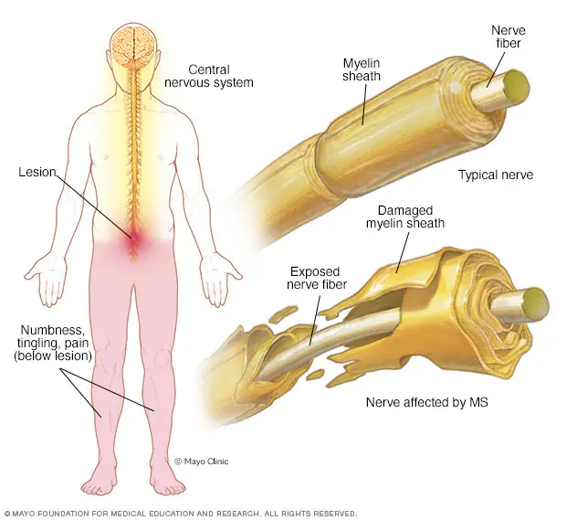

Description
Multiple Sclerosis stands for:
Multiple: refers to the different areas in the CNS that can be damaged.
Sclerosis: is the damaged tissue and/or scarring (lesions/plaques) caused
by MS.
MS is divided into four types, with two main types:
Relapsing-Remitting Multiple Sclerosis (RRMS): Is the most common MS disease
form with unpredicatable attacks (worsening of symptoms) followed by a period of partial
or full recovery. This cycle of worsening and later recovery of symptoms is called a relapse.
Primary Progressive Multiple Sclerosis (PPMS): This type of MS causes nervous
system functions to worsen as soon as they appear.
Check out this link from the National MS Society to understand more on MS types:
National MS Society
